We help textile and apparel businesses manage fiber sourcing, production planning, and inventory turns with more certainty.

Textile operations need transparency across sourcing, batch processing, and inventory to minimize waste and improve delivery accuracy.
Important measures for material yield, throughput, and quality control.
Three practical steps for aligning material, production and delivery.
Textile and apparel workflows must balance quality, speed, and material cost. We help textile teams turn batch-level visibility into consistent production and faster order fulfilment.
Quality and yield vary when material and process data are tracked manually.
Order completion stalls when planning and production are not tightly linked.
Excess stock and buffer material tie up working capital.
It is hard to trace raw materials through production when records are scattered.
Production rules are not enforced consistently across batches and lines.
Better quality control and recall readiness.
More reliable order fulfilment and throughput.
Lower stock costs and faster material flow.
Consistent product quality and fewer rejects.